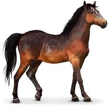
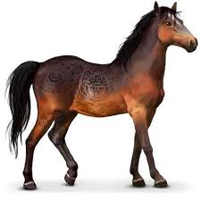
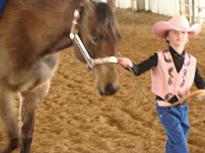
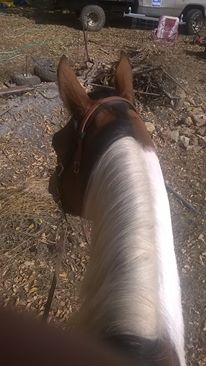
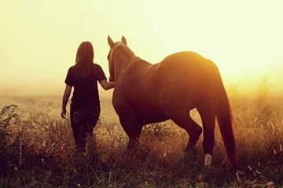

Photoshop Monstrosities----------------------------A horse Website

People and horses come in all different builds, shapes, and sizes. Luckily, saddles also come in many sizes and shapes. Different saddles are required for different disiplines. If you want a saddle that will hold you in very well, try a barrel saddle. If you desire mobility, consider a reining saddle. Want to be able to move, yet still be secure? If you dont mind lifting a heavy saddle, a roping saddle may be the one for you. Love endurance rides, or do you just prefer lightweight saddles? Maybe you should try a trail saddle. It is good to try out a saddle before commitinng to the purchase.
You can enter in horse shows
You can show in halter
You can trail ride
At the end of the day just hanging out can be fun
online horse game if you can't get a real oneI own the images on this website, none of the people or animals shown are models